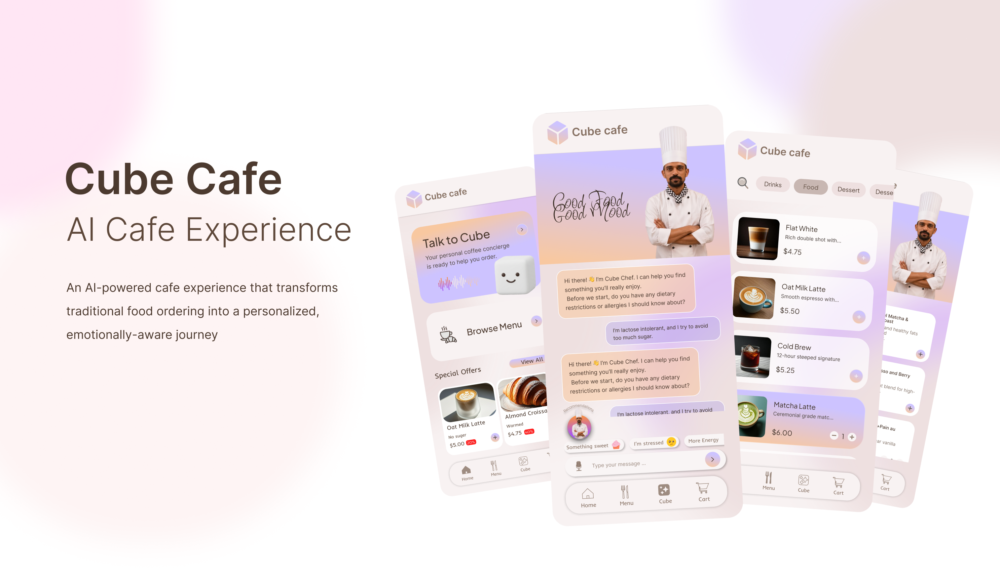
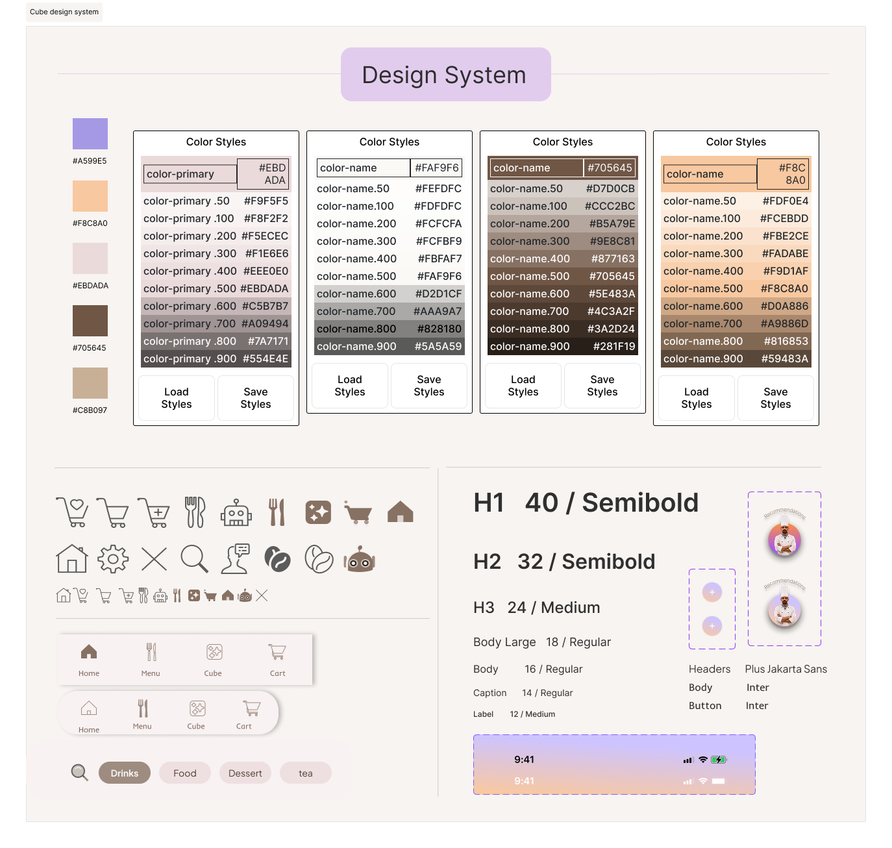
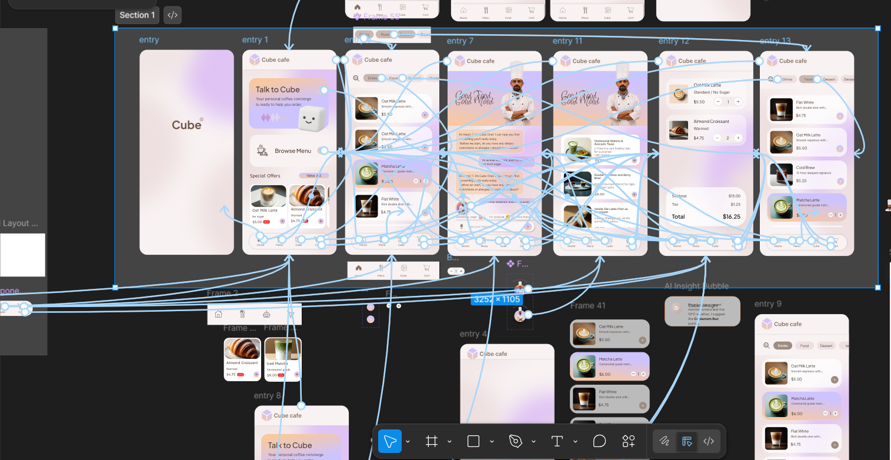

Too much menu, too little guidance.
Long category lists make people scan, compare and second-guess instead of quickly finding a good fit.
Cube Café turns a static menu into a more personal ordering experience — using taste, dietary preferences, allergies, mood and the context of the moment, while keeping the full menu one tap away.

People rarely choose from a café menu using one signal alone. What sounds right can change with taste, dietary restrictions, allergies, energy, mood, time of day and what they simply feel like having in that moment.
Long category lists make people scan, compare and second-guess instead of quickly finding a good fit.
Mood can influence a choice, but it should sit beside taste, dietary needs, allergies and the context of the day — not replace them.
A useful AI assistant should explain why something fits and let the person adjust or ignore the suggestion instantly.
Cube adds an optional intelligent layer. Users who already know what they want can browse and order directly without talking to the assistant.
Little things people wish their café menu understood ✦
“I wish the menu remembered what I can actually eat.”
“I want something that fits my taste today—not the same top pick every time.”
“Some days I know what I want. Other days, help me find it.”
Instead of defining the experience as “emotion-based ordering,” Cube combines several lightweight signals to narrow the menu and surface options that make sense now.
The assistant can start from what the user already knows — “something cold,” “no dairy,” “not too sweet” — and combine it with preferences or mood when relevant. The goal is not to diagnose emotion. The goal is to make choosing easier and more personal.
The AI is optional by design. Cube supports both fast, task-focused ordering and exploratory recommendation without forcing either behaviour.
Enter the café experience instantly without creating unnecessary friction.
Open the menu directly or ask Cube to help find something that fits.
Preferences, restrictions and current context shape the shortlist.
Adjust ingredients, review the choice and continue to the same cart.
Browse the complete menu, customize an item and order normally.
Talk to Cube, get a small set of contextual recommendations, then order from the same menu.
The design system is presented as part of the product story rather than replaced by a new portfolio aesthetic.

The portfolio gives the real interaction work more space, instead of surrounding it with too many generic cards and decorative UI.
Cube should feel less like a chatbot bolted onto a café and more like a knowledgeable server: available when useful, invisible when it is not.

The real prototype video remains the final proof of the interaction. No recreated screens, no substitute visuals.
The core design idea is a café experience that can adapt to the person in front of it — their taste, needs and current context — while preserving choice, speed and control.